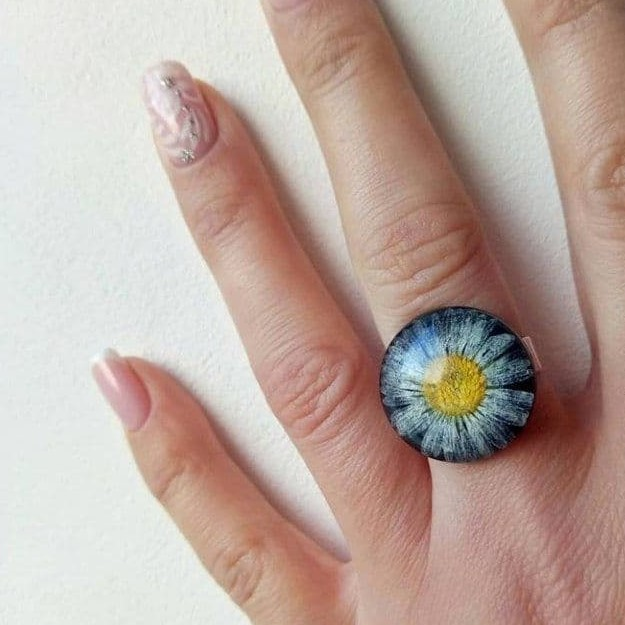

Roman Kozak
каблучки

Колечко із ромашкою на чорному фоні 🌺 Ромашка на чорному фоні виглядає просто неймовірно, тому я ще не раз її використовуватиму у своїх роботах. Але маю до вас питання яких форм колечка ви б хотіли побачити наступними? 🤔
250 грн